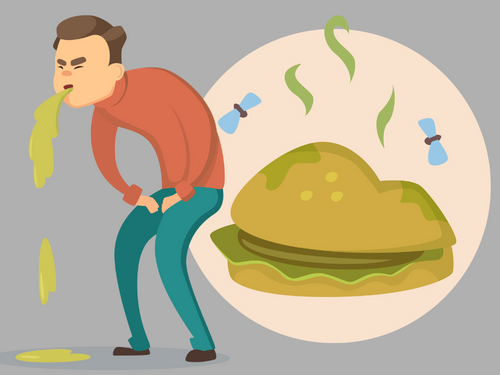

Food Poisoning Instructions

Sundin ang mga hakbang na ito para pamahalaan ang food poisoning:
- Tumawag ng tulong medikal kung malubha ang mga sintomas o kung ang tao ay napakabata, matanda, o may mahinang immune system.
- Kung gising ang tao, hikayatin siyang uminom ng mga likido tulad ng tubig, oral rehydration solutions, o malinaw na sabaw upang maiwasan ang dehydration.
- Pahingahin ang tao at iwasan siyang bigyan ng solidong pagkain hanggang sa humupa ang pagsusuka at pagtatae.
- Kung malubha ang pagsusuka, subukang magtimpla ng kaunting tubig, sports drinks, o electrolyte solutions sa maliliit na higop.
- Para sa mga banayad na kaso, maaaring magbigay ng mga bland na pagkain tulad ng crackers, tinapay, at kanin kapag humupa na ang pagsusuka at pagtatae.
- Bantayan ang mga palatandaan ng dehydration tulad ng pagkatuyo ng bibig, pagkahilo, o kakaunting ihi. Kung mangyari ito, maghanap ng tulong medikal.
- Iwasan ang pagbibigay ng anti-diarrheal na gamot maliban na lang kung inutusan ng doktor, dahil maaari itong magpalala ng ilang impeksyon.
Go Back